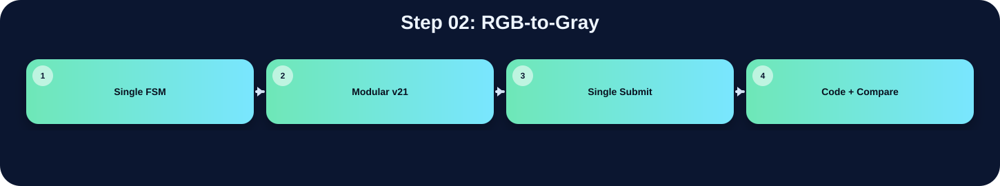

將 RGB pixel 轉換為灰階值，作為後續 Gaussian、Otsu 與 CCL 的基礎。

此表把本流程在三個版本中的 state/module 與 code 關係整理出來；沒有明確對應者保持空白。
| 版本 | 對應 state / module | 和 code 的關係 |
|---|---|---|
| Single FSM | S_LOAD | 在 S_LOAD 中呼叫 gray_round_rgb(Img_Q)，把 RGB 轉成灰階 |
| Modular v21 | threshold_v21_fast | 使用 Q16 係數把 RGB 轉成 gray：19595R + 38470G + 7471B |
| Single Submit | threshold | 使用 19595R + 38470G + 7471B 的 Q16 權重公式，把 RGB 轉成 gray |
在「RGB-to-Gray」流程中，三個版本都能對應到功能實作，但組織方式不同。Single FSM 版把功能集中在 S_LOAD，屬於 state-level 的集中控制。Modular v21 版對應到 threshold_v21_fast，通常由 top FSM 啟動特定子模組處理。Single Submit 版對應到 threshold，雖然整份 code 合併在同一個檔案中，但功能仍由相對應的 module 或 internal state 完成。因此比較重點不是功能有沒有做，而是硬體排程方式、記憶體控制權與模組邊界不同。
下方採用下拉式區塊顯示。中文說明放在程式碼上方；原始程式碼本身沒有修改、沒有插入註解。若某份檔案沒有明確對應流程，該程式碼區塊保持空白。
S_DONE = 6'd21,
// V19: split Otsu into multi-cycle states so DC sees one shared multiplier instead of many huge multipliers
S_OTSU_LHS = 6'd22,
S_OTSU_DENOM = 6'd23,
S_OTSU_SQUARE = 6'd24,
S_OTSU_CMP1 = 6'd25,
S_OTSU_CMP2 = 6'd26;
reg [5:0] state;
reg done_r;
assign done = done_r;
wire [31:0] unused_zero = (Ans_Q ^ Ans_Q);
// ============================================================
// 3-Row Line Buffer（取代 gray_mem[65535:0]）
// ============================================================
// V21: 3-bank line buffer.
// Instead of physically rotating 256 columns (prev<=curr, curr<=next),
// we keep three physical banks and rotate only 2-bit selectors.
// This preserves RTL alignment but is much easier for Design Compiler.
reg [7:0] linebuf_bank0 [0:255];
reg [7:0] linebuf_bank1 [0:255];
reg [7:0] linebuf_bank2 [0:255];
reg [1:0] lb_prev_sel, lb_curr_sel, lb_next_sel;
reg [31:0] hist [255:0];
reg [8:0] row_label [0:255];
reg [8:0] left_label;
reg [8:0] nw_label_hold;
reg [8:0] cur_label_comb;
reg [8:0] parent [MAX_LABELS-1:0];
reg bbox_valid [MAX_LABELS-1:0];
reg bbox_border [MAX_LABELS-1:0];
reg [7:0] bbox_xmin [MAX_LABELS-1:0];
reg [7:0] bbox_xmax [MAX_LABELS-1:0];
reg [7:0] bbox_ymin [MAX_LABELS-1:0];
reg [7:0] bbox_ymax [MAX_LABELS-1:0];
reg [15:0] addr_cnt;
reg [16:0] req_cnt;
reg [8:0] next_label;
reg [8:0] label_idx;
reg [7:0] edge_ctr;
reg [1:0] edge_stage;
// Line buffer loader
reg [7:0] lb_col; // 目前載入的欄
reg [7:0] lb_row; // 要從 UrSRAM 讀的列（供 S_LB_ROW 用）
reg [1:0] lb_phase; // 0=送addr, 1=等latency, 2=存資料
reg [1:0] lb_seq; // S_LB_INIT 階段序號 (0=prev, 1=curr, 2=next)
// lb_row_w：S_LB_INIT 階段根據 lb_seq 選擇要讀的 row
// 用 wire 避免 nonblocking timing 問題
wire [7:0] lb_init_row = (lb_seq == 2'd1) ? 8'd0 : 8'd1;
// seq=0: 讀 row1 (reflect of y=-1) → prev
// seq=1: 讀 row0 → curr
// seq=2: 讀 row1 → next
reg [7:0] otsu_t;
reg invert_sel;
reg [16:0] count_hi;
reg [31:0] wb_acc, sum_b_acc;
reg [7:0] otsu_idx;
reg [63:0] lhs48, rhs48;
reg [64:0] diff48;
reg [63:0] denom32;
reg [31:0] sum_total, wb_next, sum_b_next, otsu_idx32;
reg [129:0] square96, best_num;
reg [63:0] best_den;
reg [193:0] cmp_lhs, cmp_rhs;
// V19 synthesis-fast shared multiplier for Otsu.
// The original V18 S_OTSU_SCAN described several large multipliers in one cycle
// (32x32, 65x65, 130x64, 130x64). DC may spend a very long time optimizing them.
// Here all Otsu products go through one 130x64 combinational multiplier across
// several FSM states. RTL cycles increase by only ~5*256, but synthesis becomes much lighter.
reg [129:0] otsu_mul_a;
reg [63:0] otsu_mul_b;
wire [193:0] otsu_mul_y = otsu_mul_a * otsu_mul_b;
reg [7:0] ccl_x, ccl_y, ccl_base;
reg ccl_fg;
reg [8:0] ccl_n_w, ccl_n_nw, ccl_n_n, ccl_n_ne;
reg [8:0] ccl_chosen_label;
reg ccl_new_label;
reg [8:0] root_label;
reg [7:0] draw_ymax;
reg [31:0] first_pixel;
reg [1:0] special_box_idx;
reg [7:0] x_i, y_i, base_i;
// ============================================================
// function: refl101
// ============================================================
function [7:0] refl101;
input signed [31:0] v;
reg signed [31:0] t;
reg [31:0] tu;
begin
t = 32'sd0; tu = 32'd0;
if (v < 32'sd0) t = -v;
else if (v > 32'sd255) t = 32'sd510 - v;
else t = v;
tu = $unsigned(t);
refl101 = tu[7:0];
end
endfunction
// ============================================================
// function: gray_round_rgb
// ============================================================
function [7:0] gray_round_rgb;
input [31:0] pix;
reg [17:0] gs;
reg [9:0] gq;
reg [7:0] gr;
begin
gs = ({10'd0,pix[23:16]}*18'd77)+
({10'd0,pix[15:8]} *18'd150)+
({10'd0,pix[7:0]} *18'd29);
gq = gs[17:8]; gr = gs[7:0];
if ((gr>8'd128)||((gr==8'd128)&&(gq[0]==1'b1)))
gray_round_rgb = gq[7:0]+8'd1;
else
gray_round_rgb = gq[7:0];
end
endfunction
// ============================================================
// function: lb_read
// 從 line buffer 讀取，dy 為相對 row（-1/0/+1），含 x reflect
// ============================================================
function [7:0] lb_bank_read;
input [1:0] sel;
input [7:0] idx;
begin
case (sel)`timescale 1ns/1ps
// ============================================================================
// File : drawBbox_report_style_clean_v1.v
// Module : drawBbox
// Lab : iVCAD Lab7 - Draw Bounding Box
//
// Design summary
// This RTL keeps a single public submit file while separating the image
// processing flow into four hardware stages. The top module is responsible
// only for stage scheduling and SRAM/ROM ownership selection. The arithmetic
// and image-processing operations stay inside their corresponding stage
// modules so that the synthesis tool can optimize smaller logic cones.
//
// Processing flow
// 1. threshold_v21_fast : RGB-to-gray conversion, 3x3 Gaussian smoothing,
// histogram accumulation, and Otsu threshold search.
// 2. polarity_v21_fast : foreground polarity decision using the number of
// pixels above/below the selected threshold.
// 3. ccl_v21_fast : connected-component labeling and equivalence-table
// resolution.
// 4. boxing_v21_fast : bounding-box coordinate extraction and green box
// overlay on the final output image.
//
// Fixed-point arithmetic notes
// Grayscale conversion is implemented as an integer approximation of
// Gray = 0.299R + 0.587G + 0.114B
// using Q16 coefficients:
// Gray = round_even((19595R + 38470G + 7471B) / 65536)
//
// Gaussian smoothing uses the separable 3x3 kernel
// [1 2 1; 2 4 2; 1 2 1] / 16
// and is implemented with shifts and additions instead of multipliers.
//
// Otsu score comparison avoids direct division in the critical comparison by
// using cross multiplication:
// score(T) = numerator(T) / denominator(T)
// score(a) >= score(b) <=> numerator(a)*denominator(b)
// >= numerator(b)*denominator(a)
//
// Interface note
// The external top-module name and ports are intentionally unchanged so the
// original Lab7 testbench can instantiate this design without modification.
// ============================================================================
module drawBbox (
input clk, // 系統時脈輸入
input rst, // 同步或非同步重置信號
input enable, // 啟動整體影像處理流程
output done, // 輸出完成旗標
// ImgROM
input [31:0] Img_Q, // ImgROM 讀回的 32-bit RGB pixel
output Img_CEN, // ImgROM 低有效 chip enable
output reg [15:0] Img_A, // ImgROM 讀取位址
// UrSRAM
input [31:0] Ur_Q, // UrSRAM 讀回資料
output Ur_CEN, // UrSRAM 低有效 chip enable
output Ur_WEN, // UrSRAM 讀寫控制，0 為寫入、1 為讀取
output [15:0] Ur_A, // UrSRAM 存取位址
output [31:0] Ur_D, // UrSRAM 寫入資料
// AnsSRAM
input [31:0] Ans_Q, // AnsSRAM 讀回資料
output Ans_CEN, // AnsSRAM 低有效 chip enable
output Ans_WEN, // AnsSRAM 讀寫控制，0 為寫入、1 為讀取
output [31:0] Ans_D, // AnsSRAM 寫入資料
output [15:0] Ans_A // AnsSRAM 存取位址
);
// ---------------------------------------------------------------------------
// Top-level stage controller
// The top FSM grants memory ownership to exactly one processing stage at a
// time. Each stage receives a one-cycle start pulse only after the FSM has
// entered that stage, preventing a submodule from using a stale bus owner.
// ---------------------------------------------------------------------------
localparam ST_IDLE = 3'd0; // FSM 狀態或常數參數宣告
localparam ST_THRES = 3'd1; // FSM 狀態或常數參數宣告
localparam ST_POL = 3'd2; // FSM 狀態或常數參數宣告
localparam ST_CCL = 3'd3; // FSM 狀態或常數參數宣告
localparam ST_BOX = 3'd4; // FSM 狀態或常數參數宣告
wire box_done; // bounding-box stage 完成旗標
reg [2:0] state, next_state; // 目前 top FSM 狀態
reg [2:0] state_d; // 前一拍 top FSM 狀態，用於產生 start pulse
always @(posedge clk or posedge rst) begin
if (rst) begin
state <= ST_IDLE;
state_d <= ST_IDLE;
end else begin
state_d <= state;
state <= next_state;
end
end
// Stage-aligned one-cycle start pulses.
// A pulse is generated on the first cycle after the top controller changesassign Ur_A = (state == ST_THRES) ? thres_ur_a :
(state == ST_POL) ? pol_img_addr :
(state == ST_CCL) ? ccl_img_addr : 16'd0;
assign Ur_D = (state == ST_THRES) ? thres_ur_d : 32'd0;
// --- 3. AnsSRAM (標籤與最終成圖區) ---
assign Ans_CEN = (state == ST_CCL) ? ccl_ans_cen :
(state == ST_BOX) ? box_ans_cen : 1'b1;
assign Ans_WEN = (state == ST_CCL) ? ccl_ans_wen :
(state == ST_BOX) ? box_ans_wen : 1'b1;
assign Ans_A = (state == ST_CCL) ? ccl_ans_addr :
(state == ST_BOX) ? box_ans_addr : 16'd0;
assign Ans_D = (state == ST_CCL) ? ccl_ans_d :
(state == ST_BOX) ? box_ans_d : 32'd0;
always @(*) begin
case (state)
ST_IDLE: if (enable) next_state = ST_THRES; else next_state = ST_IDLE;
ST_THRES: if (thres_done) next_state = ST_POL; else next_state = ST_THRES;
ST_POL: if (pol_done) next_state = ST_CCL; else next_state = ST_POL;
ST_CCL: if (ccl_done) next_state = ST_BOX; else next_state = ST_CCL;
ST_BOX: if (box_done) next_state = ST_IDLE; else next_state = ST_BOX;
default: next_state = ST_IDLE;
endcase
end
assign done = box_done; // 把 boxing 的完成訊號直接交給 Testbench
//assign done = ccl_done;
endmodule
// ================================================================
// Source: threshold.v
// ================================================================
module threshold (
input clk,
input rst,
input start, //啟動時拉高一個clk周期
output [7:0] Threshold, //輸出threshold值
output reg done, //完成後拉高
// ImgROM
input [31:0] Img_Q,
output Img_CEN, //active low
output reg [15:0] Img_addr,
// UrSRAM
input [31:0] Ur_Q,
output Ur_CEN,
output Ur_WEN,
output [15:0] Ur_A,
output [31:0] Ur_D
);
reg [3:0] state;
reg [15:0] counter;
wire[16:0] next_counter;
assign next_counter = counter + 16'b1;
integer i;//迴圈變數
reg Img_cen;
assign Img_CEN = Img_cen;
reg Ur_wen;
assign Ur_WEN = Ur_wen;
reg Ur_cen;
assign Ur_CEN = Ur_cen;
reg [15:0] Ur_addr;
assign Ur_A = Ur_addr;
reg [31:0] Ur_d;
assign Ur_D = Ur_d;
//灰階
wire [25:0] image_gray_before_round;
wire [7:0] image_gray_after_round; //灰階最高256，8bit存儲wire round_up;
wire round_up = (image_gray_before_round[15:0] > 16'h8000) ||
((image_gray_before_round[15:0] == 16'h8000) && (image_gray_before_round[16] == 1'b1)); //判斷是否需要進行四捨五入，根據小數部分的值來決定是否將整數部分加1。
assign image_gray_before_round = (26'd19595 * Img_Q[23:16]) +
(26'd38470 * Img_Q[15:8]) +
(26'd7471 * Img_Q[7:0]); // 公式為 (0.299*R + 0.587*G + 0.114*B)這裡先乘以256以保留小數部分，最後再除以256進行四捨五入。
assign image_gray_after_round = round_up ? (image_gray_before_round[23:16] + 8'd1) :
(image_gray_before_round[23:16]);
//高斯
reg [7:0] u1, u2, u3, m1, m2, m3, b1, b2, b3; //input
wire [15:0] gaussian_sum = (u1) + (u2<<1) + (u3) +
(m1<<1) + (m2<<2) + (m3<<1) +
(b1) + (b2<<1) + (b3); //取四位小數
wire gaussian_round_up = (gaussian_sum[3:0] > 4'b1000) ||
((gaussian_sum[3:0] == 4'b1000) && (gaussian_sum[4] == 1'b1)); //判斷是否需要進行四捨五入，根據小數部分的值來決定是否將整數部分加1。
wire [7:0] gaussian_value = gaussian_round_up ? (gaussian_sum[11:4] + 8'd1) : (gaussian_sum[11:4]);
wire Is_the_most_up = (counter[15:8] == 8'd0)?1'b1:1'b0;
wire Is_the_most_buttom = (counter[15:8] == 8'd255)?1'b1:1'b0;
wire Is_the_most_left = (counter[7:0] == 8'd0)?1'b1:1'b0;
wire Is_the_most_right = (counter[7:0] == 8'd255)?1'b1:1'b0;
//計算高斯數據參數
reg [3:0]get_data_state;
wire [4:0]next_get_data_state = (get_data_state == 4'd11)? 4'b0 : (get_data_state + 4'b1);
wire[15:0]up_index = counter - 16'd256;
wire[15:0]buttom_index = counter + 16'd256;
//分類前景後景參數
reg [1:0] ISODATA_state ;
reg [15:0] gray_level[255:0]; //灰階值
wire [16:0] next_gray_level = gray_level[gaussian_value] + 16'b1;
reg [23:0] sum_contribution_background; //65536*256最大值為16777216，需要24bit來存儲
wire [24:0] next_sum_contribution_background;
assign next_sum_contribution_background = sum_contribution_background + (gray_level[counter]*counter);
reg [23:0] sum_contribution_foreground;
wire [24:0] next_sum_contribution_foreground;
assign next_sum_contribution_foreground = sum_contribution_foreground + (gray_level[counter]*counter);
//計算threshold用
reg [15:0] sf;
wire [16:0] next_sf = sf + gray_level[counter];
reg [15:0] sb;
wire [16:0] next_sb = sb + gray_level[counter];
reg [7:0] T_counter;
wire [8:0] next_T_counter = (T_counter == 0)? 8'b0 : T_counter - 8'b1;
wire [40:0] term_f = sum_contribution_foreground * sb; // 24bit*17bit=41bit
wire [40:0] term_b = sum_contribution_background * sf; // 24bit*17bit=41bit
// 計算分子,絕對差值的平方
wire [40:0] diff_term = (term_f > term_b) ? (term_f - term_b) : (term_b - term_f);
wire [81:0] num_curr = diff_term * diff_term; // 41-bit * 41-bit = 82-bit
// 計算分母
wire [33:0] den_curr = sf * sb; // 17-bit * 17-bit = 34-bit
// 交叉相乘
reg [81:0] num_max;
reg [33:0] den_max;
reg [7:0] Max_T; // 最佳 Threshold 輸出
assign Threshold = Max_T; //輸出threshold
// 交叉相乘
wire [115:0] cross_left = num_curr * den_max;
wire [115:0] cross_right = num_max * den_curr;
always@(posedge rst or posedge clk) begin
if(rst) begin //初始化
done <= 1'd0;
counter <= 16'd0;
state <= 2'd0;
Img_cen <= 1'd0; //預設為讀取圖像
Img_addr <= 16'd0;